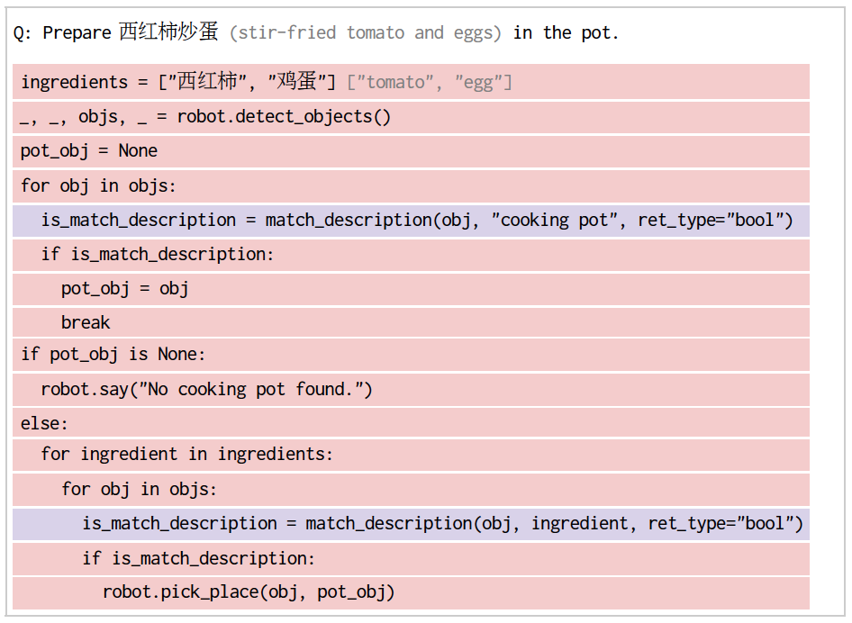

Chain of Code: Reasoning with a Language Model-Augmented Code Emulator
, , , , , , , , ,
1Google DeepMind, 2Stanford University, 3University of California, Berkeley
*Work done as a student researcher at Google DeepMind. †Equal advising.
Abstract
Code provides a general syntactic structure to build complex programs and perform precise computations when paired with a code interpreter – we hypothesize that language models (LMs) can leverage code-writing to improve Chain of Thought reasoning not only for logic and arithmetic tasks, but also for semantic ones (and in particular, those that are a mix of both). For example, consider prompting an LM to write code that counts the number of times it detects sarcasm in an essay: the LM may struggle to write an implementation for "detect_sarcasm(string)" that can be executed by the interpreter (handling the edge cases would be insurmountable). However, LMs may still produce a valid solution if they not only write code, but also selectively "emulate" the interpreter by generating the expected output of "detect_sarcasm(string)" and other lines of code that cannot be executed. In this work, we propose Chain of Code (CoC), a simple yet surprisingly effective extension that improves LM code-driven reasoning. The key idea is to encourage LMs to format semantic sub-tasks in a program as flexible pseudocode that the interpreter can explicitly catch undefined behaviors and hand off to simulate with an LM (as an "LMulator"). Experiments demonstrate that Chain of Code outperforms Chain of Thought and other baselines across a variety of benchmarks; on BIG-Bench Hard, Chain of Code achieves 84%, a gain of 12% over Chain of Thought. CoC scales well with large and small models alike, and broadens the scope of reasoning questions that LMs can correctly answer by "thinking in code".
Introduction
We propose Chain of Code (CoC), a simple yet surprisingly effective extension that improves Language Model (LM) code-driven reasoning. It broadens the scope of reasoning questions that LMs can correctly answer by "thinking in code".
The key idea is to encourage LMs to format semantic sub-tasks in a program as flexible pseudocode that the interpreter can explicitly catch undefined behaviors and hand off to simulate with an LM (as an "LMulator").
Method
Compared to previous reasoning methods, Chain of Code first (d) generates code or pseudocode to solve the question and then (e) executes the code with a code interpreter if possible, and with an LMulator (language model emulating code) otherwise. Blue highlight indicates LM generation. Red highlight indicates LM generated code being executed by an interpreter. Purple highlight indicates an LMulator simulating the code via a program state in green.
Results on Language Reasoning
On BIG-Bench Hard (BBH), Chain of Code achieves 84%, a gain of 12% over Chain of Thought and a new state of the art. It further, outperforms the average human raters in 18 out of 23 tasks.
Chain of Code performs on par with Chain of Thought for the NLP subset of BBH, and outperforms even the best human raters for the algorithmic subset of BBH.
Chain of Code (Interweave) based on text-davinci-003 even outperforms a much larger instruction tuned model gpt-4, which is instructed to write code to solve the reasoning problems, if it's helpful to do so.
Robotics Applications
Chain of Code is well fit for solving robotics tasks because they require both semantic and algorithmic reasoning. They also involve interfacing with other APIs through code (e.g., control or perception APIs) and with users through natural language. Red highlight indicates LM generated code being executed by an interpreter. Purple highlight indicates an LMulator simulating the code.

Example Model Outputs for Language Reasoning
Example model outputs for some of the most challenging BBH tasks that require both semantic and algorithm reasoning. Red highlight indicates LM generated code being executed by an interpreter. Purple highlight indicates an LMulator simulating the code via a program state in green.
Ablation Studies
With careful ablation studies, we confirm all design choices of Chain of Code is essential for its good performance.
Scaling
Unlike Chain of Thought, which only emerges for large models, Chain of Code scales well with large and small models alike.